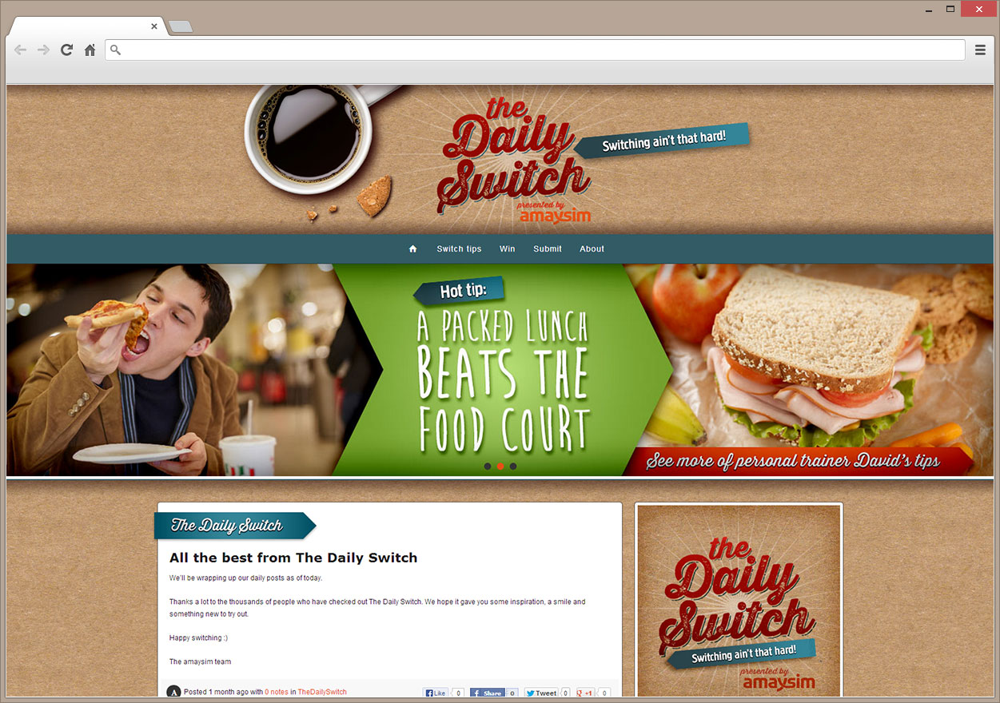

The Daily Switch
Responsive Tumblr Site
The Daily Switch was a campaign for amaysim to encourage people to make a small switch in their day to be more efficient, or simply to keep things interesting.
Traffic would be generated through facebook and EDMs therefore there was a requirement for the build to be responsive to give the same experience for all viewing devices.
Concept DesignWeb DesignFront End DevelopmentLogo Design
